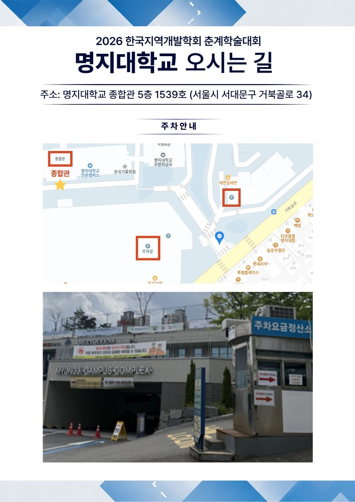

ㅇ 지역의 미래: 빅데이터 기반의 도시·농촌·남북한 거버넌스
2026. 05. 22(금) | 명지대학교 종합관
본 학술대회는 급변하는 사회·경제 환경 속에서 나타나는 지역의 구조적 변화와 미래 발전 방향을 종합적으로 논의하기 위해 개최된다. 도시와 농촌의 공간 변화, 남북한 거버넌스, 지방행정 혁신, 초광역권 형성, 지방소멸 대응 전략, 그리고 AI와 빅데이터 기반 지역연구 등 다양한 주제를 통합적으로 조망함으로써 지역발전의 새로운 패러다임을 모색하고자 한다. 특히 학계와 정책연구기관, 지역 현장의 전문가들이 함께 참여하여 지역문제 해결을 위한 학제적 협력과 정책적 대안을 제시하는 것을 목표로 한다.
좌장: 서문기 교수 (숭실대)
장소: 종합관 539호
좌장: 기정훈 교수 (명지대)
장소: 종합관 533호
좌장: 박진영 (한국지방행정연구원, 지역균형발전 실장)
장소: 종합관 633호
사회: 권인혜 부연구위원 (한국농촌경제연구원)
좌장: 김정연 이사 (사회투자지원재단)
장소: 종합관 637호
좌장: 류종현 교수 (강원대)
장소: 종합관 641호
좌장: 황지욱 (경실련 도시개혁센터 이사장, 전북대학교 교수)
장소: 종합관 552호
좌장: 이성수 (한국섬진흥원 정책연구실장)
장소: 종합관 209호
좌장: 장한두 교수 (전북대 도시공학과)
장소: 종합관 250호
좌장: 서문기 교수 (숭실대)
장소: 종합관 539호
사회: 임형백 교수 (성결대)
장소: 종합관 533호
좌장: 이승지 박사 (LHRI)
장소: 종합관 633호
좌장: 이관룰 (충남연구원)
장소: 종합관 637호
좌장: 전재범 교수 (강원대 부동산학과)
장소: 종합관 641호
좌장: 최충익 교수 (강원대)
장소: 종합관 552호
좌장: 이상민 교수 (충남대)
장소: 종합관 209호
좌장: 최충익 교수 (강원대)
장소: 종합관 250호
주소: 서울특별시 서대문구 거북골로 34 명지대학교 종합관
